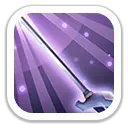
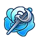
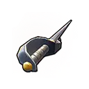
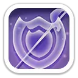

Комбо-резня
Активный навыкДжеронимо подбрасывает врагов в выбранной зоне и наносит три последовательных удара мечом.
Уровни 1–5: 160% / 176% / 192% / 208% / 224% от атаки за каждый удар.

Один из самых сильных героев первого поколения. Главное преимущество Джеронимо в том, что его навыки Экспедиции усиливают весь отряд, а не только Пехоту. Хорошо развитый герой долго сохраняет ценность в рейдах, на Свирепом медведе и в крупных боях.
Максимальные показатели героя по актуальным базам.
Работают там, где герои сражаются сами, например на Арене и в Исследовании.
Джеронимо подбрасывает врагов в выбранной зоне и наносит три последовательных удара мечом.
Уровни 1–5: 160% / 176% / 192% / 208% / 224% от атаки за каждый удар.
Каждая атака выпускает энергию меча и поражает противников в прямоугольной зоне перед Джеронимо.
Уровни 1–5: 15% / 17% / 19% / 21% / 23% от атаки.
Пока здоровье Джеронимо выше 50%, его атака повышается.
Уровни 1–5: +16% / +24% / +32% / +40% / +48% к атаке.
Работают в походах с войсками, PvP, рейдах и других боях отрядов.
Повышает наносимый всеми войсками урон.
Уровни 1–5: +5% / +10% / +15% / +20% / +25%.
Повышает атаку всех войск.
Уровни 1–5: +5% / +10% / +15% / +20% / +25%.

Каждые 4 хода повышает наносимый всеми войсками урон на 2 хода.
Уровни 1–5: +6% / +12% / +18% / +24% / +30%.

Талант повышает смертоносность и здоровье всех твоих войск даже тогда, когда Джеронимо не участвует в походе.

При максимальной прокачке добавляет Джеронимо характеристики героя, а Пехоте даёт до +62,5% смертоносности и +62,5% здоровья.

Приоритет зависит от того, как именно ты используешь Джеронимо.
1Боевой манифест до максимума. При присоединении особенно важен первый навык Экспедиции первого героя.
После него остальные навыки можно развивать в зависимости от того, используешь ли ты Джеронимо ещё и как лидера.
1Боевой манифест
2Учитель фехтования
3Эксперт владения мечом
Очень сильный вариант для лидера рейда. Усиления всех войск и «Рассвет» хорошо работают на общий урон.
Одна из главных ролей героя. Все три навыка Экспедиции работают вместе, когда Джеронимо ведёт рейд.
«Боевой манифест» до +25% наносимого урона делает его сильным первым героем при присоединении.
Силен в ранних поколениях, но по мере появления новых героев его ценность на Арене постепенно снижается.
Сводка составлена по актуальным базам и гайдам, а не по одному источнику.
Да, если ты планируешь развивать его серьёзно. Хорошо прокачанный Джеронимо полезен не только в первом поколении. Его универсальные усиления войск, талант и «Рассвет» позволяют использовать героя значительно дольше. Но вкладываться понемногу только потому, что герой считается сильным, не всегда выгодно. Сравнивай его со своими уже развитыми героями.
Изображения используются как игровые визуальные материалы. Текст страницы переработан и сверён по нескольким актуальным источникам.